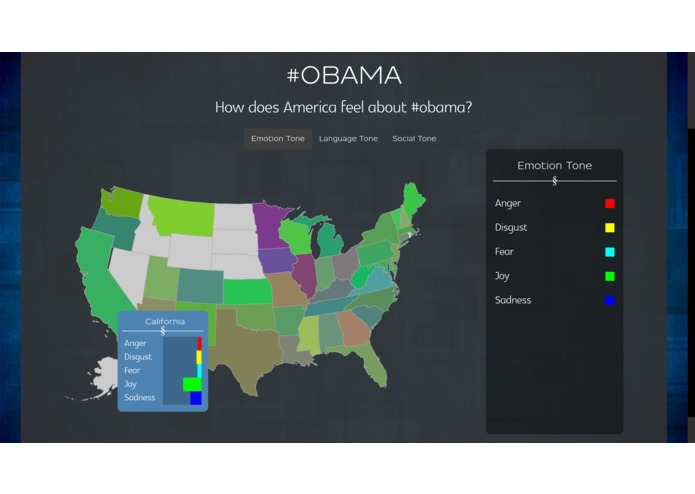

-

Watson Twitter Analyzer is a webapp that leverages the IBM Watson Personality Insights API to analyze America's attitude on a particular Twitter hashtag. Watson Twitter Analyzer takes a hashtag, and produces a map of the United States, color-coded by the mood of tweets from each state. Made at CalHacks.

I created a messenger bot to help find pets that can be adopted. I used a PetFinder API and called this project FetchAndRelease. Started at TreeHacks.
I created this website while learning HTML and CSS. It is both a personal project and something I hope to use professionally.